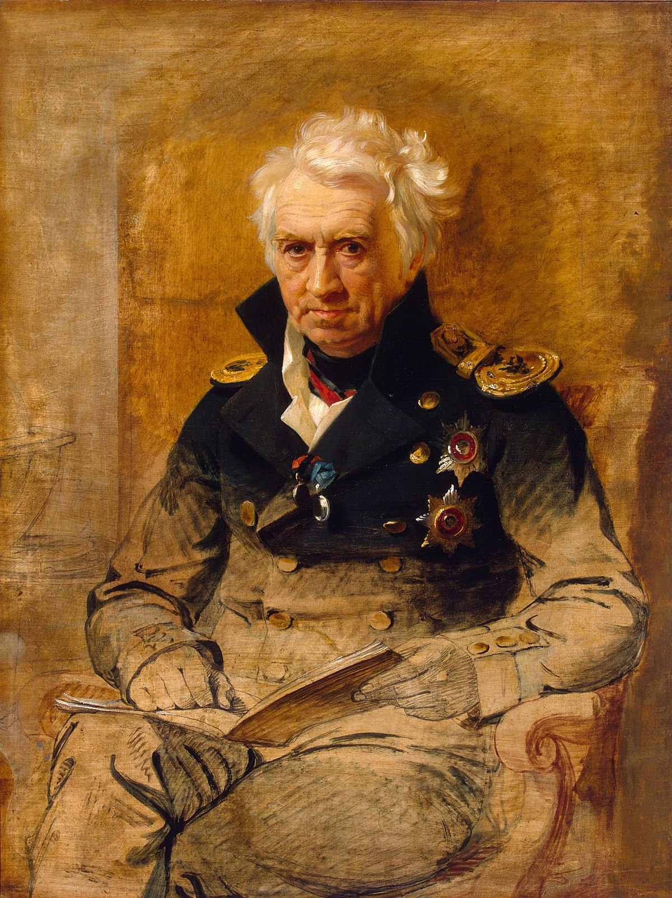

Alexander Shishkov (1754-1841)
Major works
- Рассуждение о старом и новом слоге русского языка (1803)
- 1. Resists influence of French language; embraces evolution of Old Church Slavonic in development of Russian literary language
- 2. Conservative romantic thinker who is interested in national identity, which is represented through OCS
